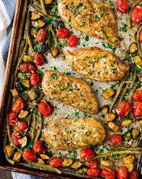

Italian chicken recipe:

Description:
An Italian chicken breast dish typically features a chicken breast that is seasoned, cooked, and often paired with ingredients and flavors characteristic of Italian cuisine.
Ingredients:
- 1 (16 ounce) bottle Italian dressing (such as Olive Garden℠ Signature Italian Dressing)
- 1/4 cup grated Parmesan cheese
- 4 boneless skinless chicken breasts
Steps:
- Stir Italian dressing and Parmesan cheese together in a bowl.
- Place chicken in a slow cooker, and pour dressing mixture over chicken. Cover and cook on Low until chicken is tender, no longer pink in the center, and the juices run clear, about 8 hours.